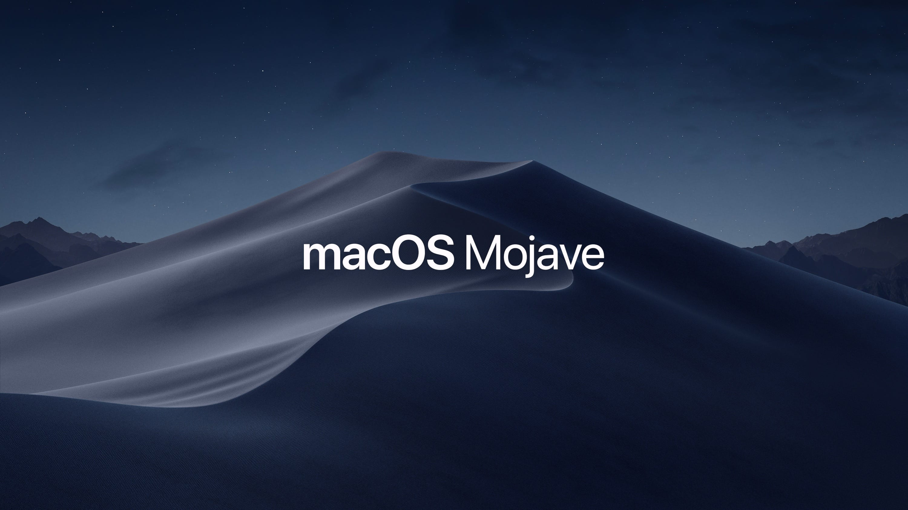

1. Karanlık Mod 2. Dinamik Desktop, yani böyle havalı bir ismi var ama duvar kağıdının günün zamanına göre değişmesi özelliği aslında. Windows 7’de mi Vista’da mı vardı animasyonlu duvar kağıdı gibi birşey. 3. Tema renkleri, MacOS’da arabirimindeki renklendirme seçenekleri 8’e çıkmış (eskiden 2 idi galiba) Favorim mor. 4. Stacks, masaüstündeki dağınıklığı toparlamak için yeni bir seçenek, klasör ve dosyaları gruplandırarak masaüstünü derli toplu yapıyor. Masaüstünde hiçbirşey bulundurmayan benim gibiler için anlamsız bir özellik. 5. Finder - Gallery View, finder’da dosyaları önizleyerek göz gezdirebilirsiniz, özellikle GIF’ler için faydalı. 6. Quick Actions, finder’da göz atılan dosyalarda hızlı değişiklikler yapabilme imkanı, aynı durum Quick Look içi de geçerli. 7. Metadata, finder’da göz atılan dosyalarda eğer mevcut ise önemli tüm metadata’ları görebiliyoruz. 8. Safari Tab Favicon, Safari’de açtığımız sekmelerde artık faviconlar gözüküyor. 9. Screenshot’lar, artık Shift+Command+5 ile alınan ekran görüntülerini kaydetmeden önce düzenleme yapabilme ve video kaydedebilme imkanı. 10. Yeni Mac AppStore
Bu yenilikleri toparlarken kısmen bu adresten faydalandım.